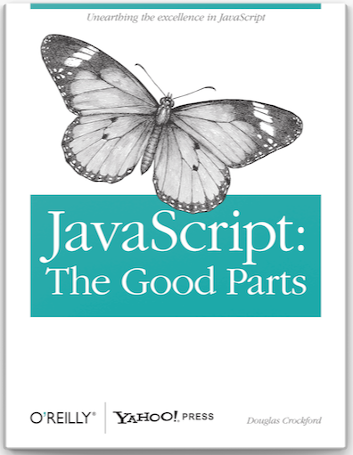

|  |
¿Qué es JavaScript?Este lenguaje de programacion nace en el año 1995 por Brendan Eich. Este hombre fue contratado por Netscape para diseñar LiveScript, el cual buscaba ejecutar script en el navegador web. Lastimosamente no era tan bueno y esto produjo que su mala fama se conociera por el mundo en esa epoca. Se le puso el nombre de "Java" debido a que en su momento este legunaje era el mas famoso, por tal motivo se cambio a JavaScript. Este lenguaje duro 10 años abandonado completamente hasta que el libro "JavaScript: The Good Parts" de Douglas Crockford le dio una nueva vida a este lenguaje de programacion ya que este se tenia en muy mal concepto y era subestimado. Luego de esta resureccion tambien nacieron 2 grandes aportes a la informatica moderna. Primero, nace un nuevo navegador web llamado Mozilla Firefox que empezaria a pelear contra Internet Explorer. Segundo, se crea Jquery, la libreria mas grande y completa para el uso y manejo de JavaScript. Gracias a estos dos la internet tuvo una expansion aun mas grande. |
|---|